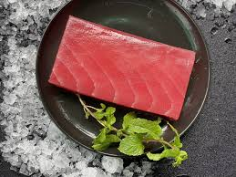

Welcome to the Keto recepies for British people!
User recomendations
British fish and fish!
Ingredients:
- 1 can of tuna (in water or oil, your choice)
- 1 fillet of frozen fish (any kind, unseasoned)
- 1 tablespoon of fish sauce
How to do it:
- Cook the Frozen Fish: Microwave the frozen fish fillet for a few minutes until it's just barely cooked through. Don’t bother seasoning it.
- Mix with Tuna: Drain the can of tuna and mix it with the microwaved fish fillet. Break the fish fillet into chunks and stir everything together in a bowl.
- Add Fish Sauce: Drizzle 1 tablespoon of fish sauce over the fish mixture. Stir until everything is coated and the smell is strong.
- Serve Cold: Serve the mixture cold, straight from the bowl. Enjoy your "fish and fish" concoction!
This dish is sure to be... memorable! 😄 😄
